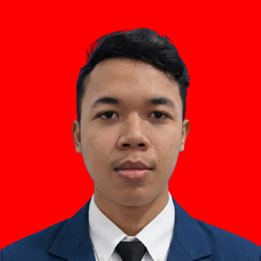

Sertifikasi MTCNA
Sertifikasi keahlian bidang networking MikroTik Certified Network Associate oleh MikroTik.
👋 Halo, saya
NIM 26051204096 • Teknik Informatika
Mahasiswa Teknik Informatika yang tertarik pada Cyber Security dan Problem Solving. Fokus pada pembangunan aplikasi web yang bersih, cepat, dan mudah digunakan dengan disiplin ilmu rekayasa perangkat lunak.

What Can I Do
Achievements
Sertifikasi keahlian bidang networking MikroTik Certified Network Associate oleh MikroTik.
Melakukan problem solving pada robot dan menjadi operator robot saat lomba.
Menyelesaikan project Superlab pada lomba bidang networking dengan software Cisco Packet Tracer.